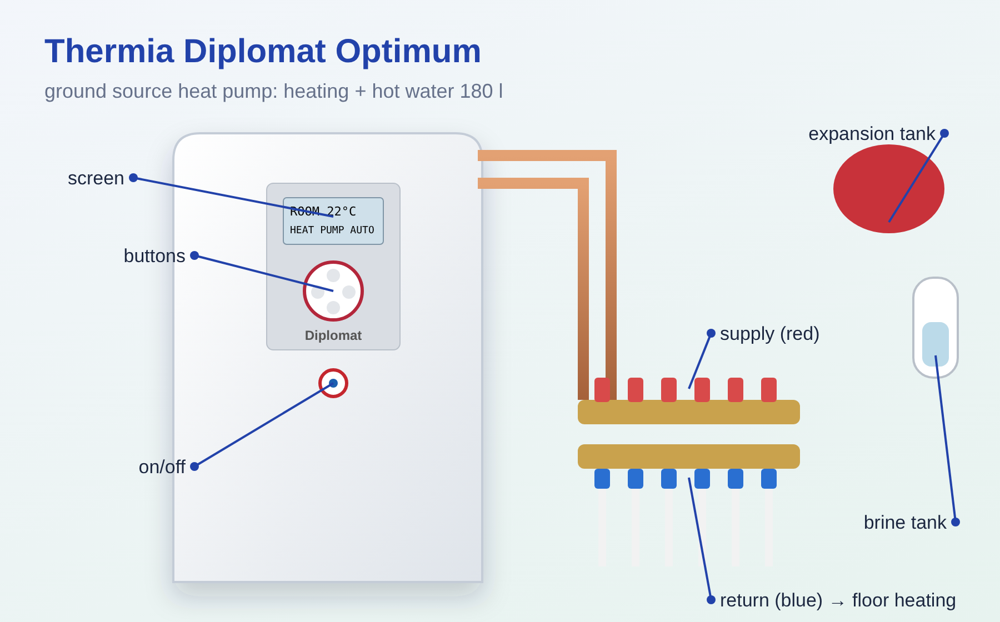
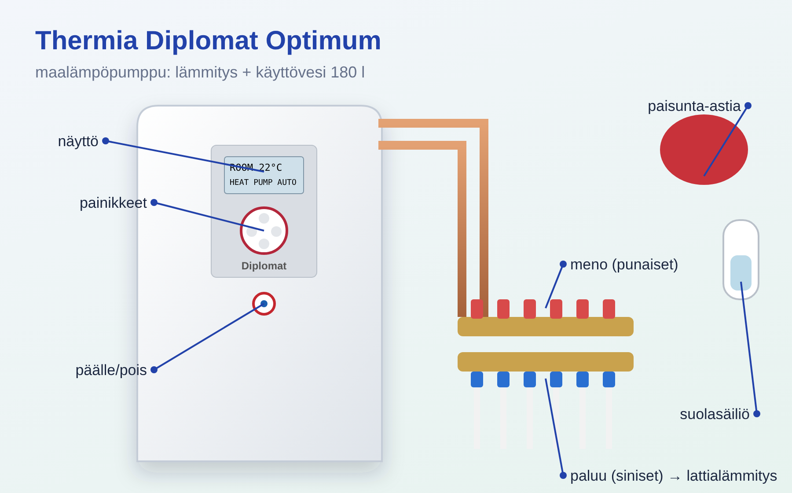

• Геотермальный (грунтовой) тепловой насос: забирает тепло из земли через контур с незамерзающим рассолом и греет тёплый пол и воду в баке на 180 л. • Электричество: три автомата «M.L.P.» в левом ряду щита + главный выключатель на самом насосе (красное кольцо под панелью).
• Четыре кнопки: «+» — вверх / больше; «−» — вниз / меньше; «>» — выбрать, открыть меню; «<» — отмена, выйти из меню. • Лампа: не горит — нет питания; горит — всё в порядке; МИГАЕТ — тревога (см. раздел «Тревоги»). • Экран: ROOM — заданная комнатная температура; режим работы (AUTO и др.); статус. • Статусы на экране: NO HEAT DEMAND — тепло не требуется; HEAT PUMP START --XX — насос запустится через XX минут; HEAT PUMP+AUX. HEAT — работает с электродогревом; EVU STOP — остановлен по тарифу. • Значки: HP — работает компрессор; молния — электродогрев (с номером ступени); домик — идёт отопление; кран — греется горячая вода; бак — уровень горячей воды; часы — тарифное управление.
1. Один раз нажать «+» или «−» — откроется значение ROOM. 2. Кнопками «+» / «−» поставить нужную температуру. 3. Подождать 10 секунд или нажать «<» — настройка сохранится. • Меняйте по 1 °C и ждите сутки — тёплый пол медленный. 1 °C ROOM ≈ +3 °C температуры подачи. • Если нужно изменить больше чем на ~3 °C — это делается настройкой CURVE (лучше с монтажником).
Как сменить: «<» или «>» → откроется меню INFORMATION, курсор на OPERATION → «>» → звёздочкой отмечен текущий режим → «+»/«−» выбрать → «>» подтвердить → дважды «<» выйти. • AUTO — обычный режим: насос + электродогрев по необходимости. Держать в AUTO. • HEAT PUMP — только компрессор, без электродогрева (и без прогрева от легионеллы). • AUX. HEATER — только электронагреватель (если насос неисправен). • HOT WATER — только горячая вода, отопление не работает (летом). • OFF — полностью выключен (используется и для сброса тревог).
• OPERATION — режим работы. • HEATCURVE — кривая отопления: CURVE (температура подачи при 0 °C на улице), CURVE 5 / 0 / −5 (поправки при этих уличных температурах), MIN и MAX (пределы подачи — для тёплого пола не повышать MAX), HEATSTOP (при какой уличной температуре отопление выключается, заводское 17 °C). • TEMPERATURE — текущие температуры: улица, горячая вода (HOTWATER), подача и др.; «>» на значении — график за час. • OPERAT.TIME — часы работы насоса и ступеней электродогрева.
• Бак 180 л; вода греется примерно до 50–55 °C (температуру пользователь не задаёт). • Пока греется вода, отопление стоит — это нормально (у горячей воды приоритет). • Раз в 7 дней вода автоматически греется до 60 °C от легионеллы (только в режиме AUTO). • Отдельной кнопки «экстра горячей воды» в этой модели нет. Если нужно быстро много горячей воды — временно режим HOT WATER, потом обязательно вернуть AUTO. • Посмотреть температуру воды: INFORMATION → TEMPERATURE → HOTWATER.
Сброс большинства тревог: режим OFF → затем снова AUTO (см. «Режимы работы»). Если тревога повторяется — звать сервис. • HIGH PRESSURE ERROR — сработал датчик высокого давления, компрессор стоит. Часто — плохой поток в отоплении: проверить, открыты ли контуры, давление в системе. • LOW PRESSURE ERROR — низкое давление, компрессор стоит. Часто — мало рассола или он слишком холодный: проверить бачок рассола. • MOTOR P ERROR — сработала защита мотора компрессора. • BRINE OUT — рассол слишком холодный; горячей воды нет. • BRINEFLOW LOW — нет потока рассола при запуске; горячей воды нет. Проверить уровень в бачке рассола. • AUX. HEATER — перегрев электродогрева. • OUTDOOR / SUPPLY LINE / RETURN LINE / HOT WATER SENSOR — неисправен датчик → сервис. • HIGH RETURN — слишком высокая температура обратки, компрессор заблокирован. • При тревоге насос продолжает греть как может (компрессор, потом ТЭН); горячая вода останавливается.
• Давление в отоплении — раз в месяц по манометру: 1–1,5 бар. Если в холодной системе ниже 0,8 бар — подпитать водой (обычно через кран подпитки; если не знаете где — монтажник). Добавки в воду не лить. Воздух из расширительного бака НЕ спускать. • Уровень рассола — в белом пластиковом бачке над канистрой: если жидкость перестала быть видна — долить из канистры (спиртовой рассол, огнеопасно). В первый месяц после монтажа уровень немного падает — это нормально. • Предохранительные клапаны отопления (2 шт.) — минимум 4 раза в год: повернуть колпачок на четверть оборота по часовой — из сливной трубки должна пойти вода. Так же проверить клапан бойлера (на входе холодной воды). Слив клапанов никогда не перекрывать — вода горячая, идёт в трап. • Фильтры-грязевики отопления и рассола — чистить 2 раза в год (сначала выключить насос главным выключателем); можно поручить сервису.
• Течь из трубы горячей воды — закрыть кран холодной воды на входе бойлера, звать монтажника. • Течь рассола — выключить тепловой насос и сразу звать монтажника.
• Открывать переднюю панель — только монтажник (электрика и хладагент). • Надолго оставлять зимой в OFF или HOT WATER — дом и трубы могут промёрзнуть. • Хранить рядом растворители, хлорку, краски, клей — коррозия.

• Geothermal (ground-source) heat pump: it extracts heat from the ground through a circuit filled with antifreeze brine and heats the underfloor heating and the water in the 180 l tank. • Electricity: three “M.L.P.” circuit breakers in the left row of the distribution board + the main switch on the pump itself (red ring under the panel).
• Four buttons: “+” — up / more; “−” — down / less; “>” — select, open a menu; “<” — cancel, leave a menu. • Lamp: off — no power; steady — everything is OK; FLASHING — alarm (see “Alarms”). • Display: ROOM — set room temperature; operating mode (AUTO etc.); status. • Status messages: NO HEAT DEMAND — no heat needed; HEAT PUMP START --XX — the pump will start in XX minutes; HEAT PUMP+AUX. HEAT — running with the electric auxiliary heater; EVU STOP — stopped by the tariff control. • Symbols: HP — compressor running; lightning bolt — electric auxiliary heater (with step number); house — space heating in progress; tap — hot water being heated; tank — hot water level; clock — tariff control.
1. Press “+” or “−” once — the ROOM value opens. 2. Use “+” / “−” to set the desired temperature. 3. Wait 10 seconds or press “<” — the setting is saved. • Change it by 1 °C at a time and wait a day — underfloor heating is slow. 1 °C of ROOM ≈ +3 °C of supply temperature. • If you need to change it by more than ~3 °C, this is done with the CURVE setting (preferably with the installer).
How to change: “<” or “>” → the INFORMATION menu opens with the cursor on OPERATION → “>” → the current mode is marked with an asterisk → “+”/“−” to choose → “>” to confirm → “<” twice to exit. • AUTO — normal mode: heat pump + electric auxiliary heater when needed. Keep it in AUTO. • HEAT PUMP — compressor only, no auxiliary heater (and no anti-legionella heating). • AUX. HEATER — electric heater only (if the heat pump is faulty). • HOT WATER — hot water only, space heating is off (summer). • OFF — completely off (also used to reset alarms).
• OPERATION — operating mode. • HEATCURVE — heating curve: CURVE (supply temperature at 0 °C outdoors), CURVE 5 / 0 / −5 (corrections at these outdoor temperatures), MIN and MAX (supply limits — do not raise MAX for underfloor heating), HEATSTOP (outdoor temperature at which space heating switches off, factory setting 17 °C). • TEMPERATURE — current temperatures: outdoor, hot water (HOTWATER), supply etc.; “>” on a value shows a graph for the last hour. • OPERAT.TIME — operating hours of the heat pump and the auxiliary heater steps.
• 180 l tank; the water is heated to about 50–55 °C (the user does not set this temperature). • While the water is being heated, space heating pauses — this is normal (hot water has priority). • Every 7 days the water is automatically heated to 60 °C against legionella (only in AUTO mode). • This model has no separate “extra hot water” button. If you quickly need a lot of hot water, temporarily switch to HOT WATER mode, then be sure to return to AUTO. • To check the water temperature: INFORMATION → TEMPERATURE → HOTWATER.
Resetting most alarms: OFF mode → then AUTO again (see “Operating modes”). If the alarm comes back, call service. • HIGH PRESSURE ERROR — the high-pressure switch has tripped, the compressor is stopped. Often caused by poor flow in the heating system: check that the circuits are open and check the system pressure. • LOW PRESSURE ERROR — low pressure, the compressor is stopped. Often there is too little brine or it is too cold: check the brine tank. • MOTOR P ERROR — the compressor motor protection has tripped. • BRINE OUT — the brine is too cold; no hot water. • BRINEFLOW LOW — no brine flow at start-up; no hot water. Check the level in the brine tank. • AUX. HEATER — the auxiliary heater has overheated. • OUTDOOR / SUPPLY LINE / RETURN LINE / HOT WATER SENSOR — faulty sensor → service. • HIGH RETURN — return temperature too high, the compressor is blocked. • During an alarm the pump keeps heating as best it can (compressor, then the immersion heater); hot water production stops.
• Heating system pressure — once a month on the pressure gauge: 1–1.5 bar. If it is below 0.8 bar in a cold system, top up with water (usually through the filling valve; if you don't know where it is — ask the installer). Do not add any additives to the water. Do NOT let air out of the expansion vessel. • Brine level — in the white plastic tank above the canister: if the liquid is no longer visible, top up from the canister (alcohol-based brine, flammable). In the first month after installation the level drops slightly — this is normal. • Heating safety valves (2 pcs.) — at least 4 times a year: turn the cap a quarter turn clockwise — water should come out of the drain pipe. Check the water heater valve (on the cold water inlet) the same way. Never block the valve drains — the water is hot and goes into the floor drain. • Heating and brine dirt filters (strainers) — clean twice a year (first switch the pump off with the main switch); you can leave this to service.
• Leak from a hot water pipe — close the cold water valve at the water heater inlet and call the installer. • Brine leak — switch off the heat pump and call the installer immediately.
• Open the front panel — installer only (electrics and refrigerant). • Leave it in OFF or HOT WATER for a long time in winter — the house and pipes may freeze. • Store solvents, chlorine bleach, paints or glue nearby — corrosion.

• Maalämpöpumppu: ottaa lämpöä maasta jäätymättömällä keruuliuoksella täytetyn piirin kautta ja lämmittää lattialämmityksen sekä 180 litran varaajan veden. • Sähköt: kolme ”M.L.P.”-sulaketta sähkökeskuksen vasemmassa rivissä + pääkytkin itse lämpöpumpussa (punainen rengas paneelin alla).
• Neljä painiketta: ”+” — ylös / enemmän; ”−” — alas / vähemmän; ”>” — valitse, avaa valikko; ”<” — peruuta, poistu valikosta. • Merkkivalo: ei pala — ei virtaa; palaa — kaikki kunnossa; VILKKUU — hälytys (ks. kohta ”Hälytykset”). • Näyttö: ROOM — asetettu huonelämpötila; toimintatila (AUTO ym.); tila. • Tilailmoitukset näytöllä: NO HEAT DEMAND — lämpöä ei tarvita; HEAT PUMP START --XX — pumppu käynnistyy XX minuutin kuluttua; HEAT PUMP+AUX. HEAT — käy sähkölisälämmön kanssa; EVU STOP — pysäytetty tariffiohjauksella. • Symbolit: HP — kompressori käy; salama — sähkölisälämpö (portaan numero); talo — tilalämmitys käynnissä; hana — käyttövettä lämmitetään; varaaja — käyttöveden määrä; kello — tariffiohjaus.
1. Paina kerran ”+” tai ”−” — ROOM-arvo avautuu. 2. Aseta haluamasi lämpötila painikkeilla ”+” / ”−”. 3. Odota 10 sekuntia tai paina ”<” — asetus tallentuu. • Muuta asetusta 1 °C kerrallaan ja odota vuorokausi — lattialämmitys reagoi hitaasti. 1 °C ROOM-arvossa ≈ +3 °C menoveden lämpötilassa. • Jos lämpötilaa pitää muuttaa yli ~3 °C, se tehdään CURVE-asetuksella (mieluiten asentajan kanssa).
Näin vaihdat: ”<” tai ”>” → INFORMATION-valikko avautuu, kursori kohdassa OPERATION → ”>” → nykyinen tila on merkitty tähdellä → valitse ”+”/”−” → vahvista ”>” → poistu painamalla kahdesti ”<”. • AUTO — normaali tila: lämpöpumppu + sähkölisälämpö tarvittaessa. Pidä AUTO-tilassa. • HEAT PUMP — vain kompressori, ei sähkölisälämpöä (eikä legionellalämmitystä). • AUX. HEATER — vain sähkövastus (jos lämpöpumppu on vikaantunut). • HOT WATER — vain käyttövesi, lämmitys ei ole päällä (kesällä). • OFF — kokonaan pois päältä (käytetään myös hälytysten kuittaamiseen).
• OPERATION — toimintatila. • HEATCURVE — lämpökäyrä: CURVE (menoveden lämpötila ulkolämpötilan ollessa 0 °C), CURVE 5 / 0 / −5 (korjaukset näissä ulkolämpötiloissa), MIN ja MAX (menoveden rajat — lattialämmityksessä MAX-arvoa ei saa nostaa), HEATSTOP (ulkolämpötila, jossa lämmitys kytkeytyy pois, tehdasasetus 17 °C). • TEMPERATURE — nykyiset lämpötilat: ulkolämpötila, käyttövesi (HOTWATER), menovesi ym.; ”>” arvon kohdalla näyttää tunnin kuvaajan. • OPERAT.TIME — lämpöpumpun ja sähkölisälämmön portaiden käyttötunnit.
• Varaaja 180 l; vesi lämmitetään noin 50–55 °C:seen (käyttäjä ei aseta lämpötilaa). • Kun käyttövettä lämmitetään, tilalämmitys on tauolla — tämä on normaalia (käyttövedellä on etusija). • Kerran 7 päivässä vesi lämmitetään automaattisesti 60 °C:seen legionellan torjumiseksi (vain AUTO-tilassa). • Tässä mallissa ei ole erillistä ”lisälämmin vesi” -painiketta. Jos tarvitset nopeasti paljon lämmintä vettä, vaihda tilapäisesti HOT WATER -tilaan ja palauta sitten ehdottomasti AUTO. • Veden lämpötilan näet: INFORMATION → TEMPERATURE → HOTWATER.
Useimmat hälytykset kuitataan: OFF-tila → sitten taas AUTO (ks. ”Toimintatilat”). Jos hälytys toistuu, kutsu huolto. • HIGH PRESSURE ERROR — korkeapainepressostaatti on lauennut, kompressori on pysähtynyt. Syynä on usein heikko virtaus lämmityspiirissä: tarkista, ovatko piirit auki, ja tarkista järjestelmän paine. • LOW PRESSURE ERROR — matala paine, kompressori on pysähtynyt. Usein keruuliuosta on liian vähän tai se on liian kylmää: tarkista keruuliuoksen paisunta-astia. • MOTOR P ERROR — kompressorin moottorinsuoja on lauennut. • BRINE OUT — keruuliuos on liian kylmää; ei lämmintä käyttövettä. • BRINEFLOW LOW — keruuliuos ei virtaa käynnistyksessä; ei lämmintä käyttövettä. Tarkista keruuliuoksen paisunta-astian pinta. • AUX. HEATER — sähkölisälämpö on ylikuumentunut. • OUTDOOR / SUPPLY LINE / RETURN LINE / HOT WATER SENSOR — anturi viallinen → huolto. • HIGH RETURN — paluuveden lämpötila liian korkea, kompressori on estetty. • Hälytyksen aikana pumppu jatkaa lämmitystä kykyjensä mukaan (kompressori, sitten sähkövastus); käyttöveden lämmitys pysähtyy.
• Lämmitysjärjestelmän paine — kerran kuukaudessa painemittarista: 1–1,5 bar. Jos paine kylmässä järjestelmässä on alle 0,8 bar, lisää vettä (yleensä täyttöventtiilin kautta; jos et tiedä missä se on — kysy asentajalta). Älä lisää veteen mitään lisäaineita. ÄLÄ päästä ilmaa paisunta-astiasta. • Keruuliuoksen pinta — valkoisessa muovisäiliössä kanisterin yläpuolella: jos nestettä ei enää näy, lisää kanisterista (alkoholipohjainen keruuliuos, tulenarkaa). Ensimmäisen kuukauden aikana asennuksen jälkeen pinta laskee hieman — tämä on normaalia. • Lämmityksen varoventtiilit (2 kpl) — vähintään 4 kertaa vuodessa: käännä hattua neljänneskierros myötäpäivään — poistoputkesta pitää tulla vettä. Tarkista samalla tavalla myös lämminvesivaraajan varoventtiili (kylmän veden tulossa). Älä koskaan tuki varoventtiilien poistoputkia — vesi on kuumaa ja menee lattiakaivoon. • Lämmityspiirin ja keruupiirin lianerottimet (suodattimet) — puhdista 2 kertaa vuodessa (katkaise ensin virta pääkytkimestä); voit antaa tämän huollon tehtäväksi.
• Vuoto lämpimän käyttöveden putkesta — sulje kylmän veden venttiili varaajan tulossa ja kutsu asentaja. • Keruuliuosvuoto — sammuta lämpöpumppu ja kutsu asentaja heti.
• Etupaneelia ei saa avata — vain asentaja (sähköt ja kylmäaine). • Pumppua ei saa jättää talvella pitkäksi aikaa OFF- tai HOT WATER -tilaan — talo ja putket voivat jäätyä. • Lähellä ei saa säilyttää liuottimia, kloorivalkaisuainetta, maaleja tai liimoja — korroosio.